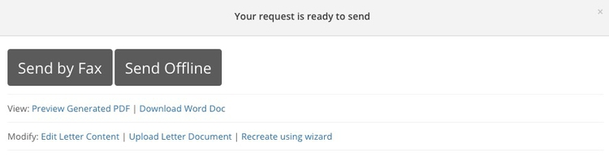
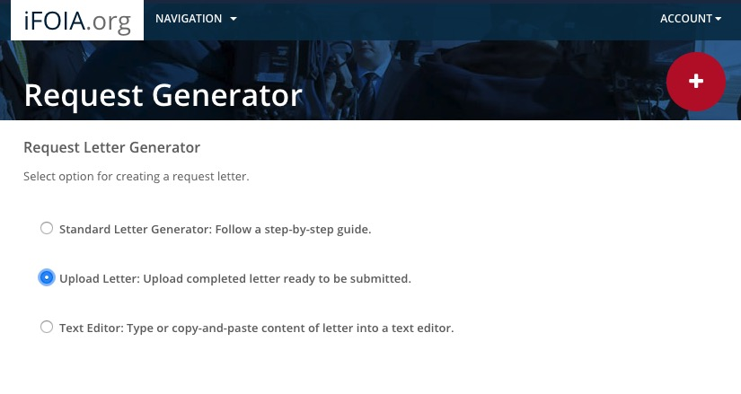

You will each file FOIA/State public records request(s) with the goal of obtaining records that can be used for your reporting in our class in the Spring Quarter.
Draft your request using the iFOIA letter generator for federal requests, or that National Freedom of Information Coalition templates for state records requests.
If using iFOIA, don’t file your request immediately. Instead, when you get to this pop-up, Download Word Doc:

Then select Follow-up>Delete Request.
Email me your draft request.
Once we have agreed the wording, save the request as a PDF. You can file through iFOIA or directly by email. If filing though iFOIA, create a new request and select the Upload letter option at this screen:

See here for a searchable and downloadable list of federal FOIA contacts.